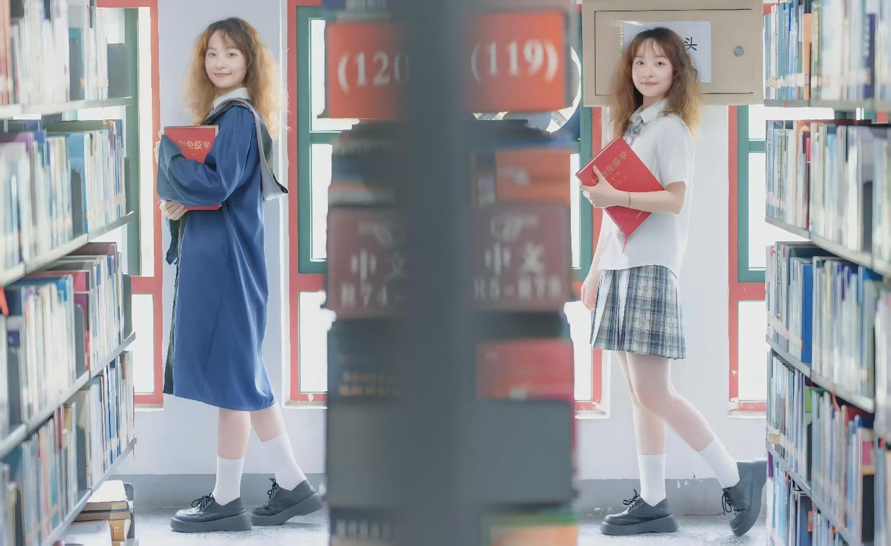

学院通知 · 竞赛比赛
四川大学图书馆阅读之美影像工作室成员在学校“光影川大”主题摄影比赛中斩获佳绩
发布时间：2026-04-29 11:24:02
近日，四川大学2025年“光影川大”系列主题摄影比赛评审结果正式揭晓。四川大学图书馆阅读之美影像工作室成员祁晓成、牛艺程、赵英铠、赵银松四位同学和肖敏老师凭借对校园生活美好瞬间的细腻捕捉，在众多参赛作品中脱颖而出，斩获多个奖项，展现了工作室成员优秀的艺术素养与青春风采。 在“光影川大·阅读之美”赛道中，祁晓成同学的作品《穿越书籍的时光隧道》荣获一等奖，以图书馆书架为背景，用“双时空”创意构图，定格了川大学子与图书馆共度的时光，在阅读的沉浸感中仿佛跨越时空，极具创意与感染力。赵英铠同学的作品《洞悉世纪之光》荣获三等奖，以独特视角捕捉图书馆建筑与光影的互动，展现了川大人文建筑的独特魅力。 在“光影川大·劳动之美”赛道中，牛艺程同学的作品《知识的传递》荣获二等奖，作品聚焦师生教学互动的瞬间，用镜头记录下知识传递过程中蕴含的劳动之美与教育温度，诠释了新时代青年对劳动价值的深刻理解。 在“光影川大·校园之美”赛道中，赵银松同学的作品《岷峨毓光》荣获二等奖，作品以校园风光为载体，将川大校园的自然之美与人文底蕴融入镜头，展现了川大校园独特的景致与气质。 在“光影川大·运动之美”赛道中肖敏老师的作品《雨战：挑战与突破》荣获三等奖，作品展现了学校教职工运动员在雨中比赛的瞬间，起跑的专注与冲刺的拼搏彰显了体育精神。 一直以来，四川大学图书馆阅读之美影像工作室致力于为热爱摄影的同学和老师们提供一个交流学习与自我成长的平台，同时也鼓励大家用镜头发现校园之美、记录青春瞬间。此次比赛中工作室成员的优异表现，不仅展现了团队成员扎实的摄影功底，也体现了四川大学美育育人的丰硕成果。未来，工作室将继续开展各类影像文化活动，引导更多同学在光影艺术中感受美、发现美、创造美，用镜头讲述川大故事，传递青春正能量，为繁荣校园文化、建设“美丽川大”贡献图书馆力量。 文：四川大学图书馆阅读之美影像工作室 赵英铠 图：四川大学图书馆阅读之美影像工作室成员
